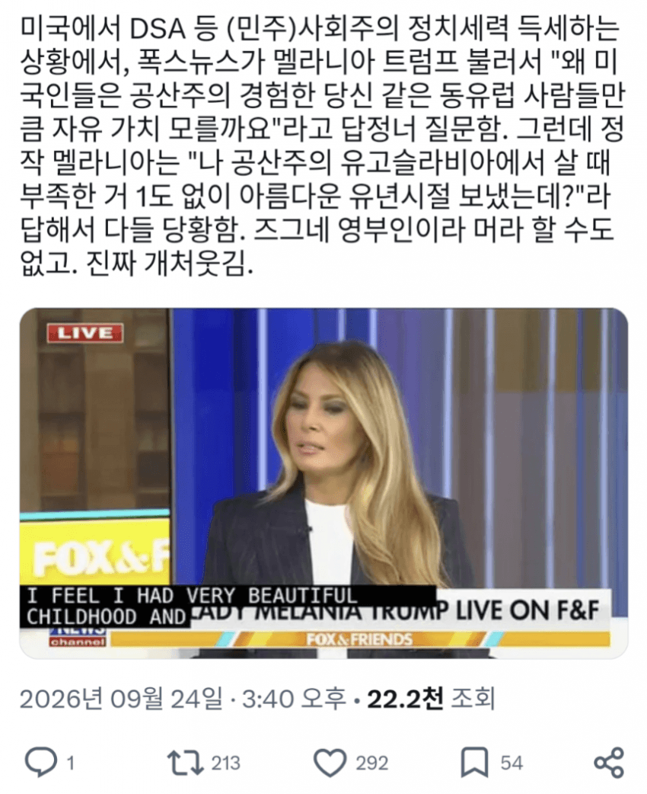

🇺🇸영부인피셜. 공산주의살만함
댓글
Stop sending me this shit.
애미애비가 공산당간부였나부지
유고가 공산주의냐 시발 대놓고 크렘린꺼져한 곳인데
그리고 내전겪기전에 나왔나보지?
생지옥이였는데 90년대에
본문에 지가 지입으로 공산주의 라는데 뭔 소리하냐
https://en.wikipedia.org/wiki/Melania_Trump 위키에서도
Trump was born Melanija Knavs on April 26, 1970, in Novo Mesto, a city in SR Slovenia, SFR Yugoslavia.
라고 하는데 애초에 쟤네 집 부유하다고 나옴
The family was well-off relative to most who lived in communist societies. They frequently went on vacations to other parts of Europe, and their apartment was decorated with brightly colored walls.
유고가 그래서 진짜 공산주의냐고
제3의길을 대놓고 천명했는데
그리고 슬로베니아 출신인데 슬로베니아는 올림픽 개최한 남한보다도 잘 살던 곳임
? 제 3의 길에 너무 집중해서 다른 공산주의 특징을 너무 등한시하는거 아님?
제 3의 길 천명해서 동서진영 사이에서 실리를 챙겼다한들 공산주의를 완전히 버린건 아니잖음
중국도 개혁개방해서 시장논리를 일부 받아들였는데 지금 그래서 중국을 자본주의 국가로 봄?
그리고 소련의 입김을 벗어나 독자노선을 채택했다고 그게 공산주의가 아니란 뜻은 아니지
북한보면 답 나오잖음
그냥 ‘진짜’ 공산주의의 끔찍함을 모르는 년이
공산주의도 아닌 일당독재자본주의 국가정상만나서 저런 좆같은 소리를 하는게 좆 같지
애초에 부모 계층으로 아버지는 국영 자동차 제조업체에 부품대주는 사람같고
어머니는 아동복 패턴제작자라는데 따지고보면 프롤레타리아 계층이 아닌 부르주아 계급인데 알 수가 없지...
애는 진짜 뭘 모르네
소련 동유럽 공산주의랑
중국 공산 주의랑
북한 공산주의랑 같음?
북한은 김씨 세습왕조고
중꿔는 마오주의 쪽이고
소련 동유럽쪽이 그나마 나은데
같은 선상에놓고 비교한다는게
그냥 무식함을 자랑하는구나
중국 자본주의 국가로 보는데요
잘 모르고 무식한 새끼나 중국보고 공산주의 이지랄 거리지
혼합이라고 보는게 맞지
혼합 좋아하시네
국가자본주의가 뭔지는 아냐
공산주의의 공자도 안남았는데
지구에 공산주의 국가 소멸했다
그런식으로 따지면 지구상에 진짜 공산주의 실현한 국가가 어딨음
저사람이 있었을때는 진짜 지낼만 했음
유고내전 터지기 직전에 유럽으로 모델일 하러 떠났네 보니까
씹ㅋㅋㅋㅋㅋ
베컴마누라가 어릴때부터 롤스로이스 타고 다녀놓고 노동자계급 빙의하려고 찡얼거리는거랑 비슷해보인다 개소리를 진지하게하네
쟤는 영부인 하는 거 싫다니까ㅋㅋㅋㅋㅋㅋㅋㅋㅋㅋ 한가운데로 던져준 공에 헛스윙하는 건 “알아들었으면 다시는 부르지 마쇼” 하는 거지ㅋㅋㅋ
멜잘알
또 나를 부르면 당신은 죽소
유고내전 전까진 살기 좋았지

보스니아 넣어 보스니아 빼
헐벗고 힘든 삶을 보냈어야해!
멜라니아 행보 보면 머리 잘돌아가는 사람인데
이건 골키퍼 없는 패널티킥인데 대놓고 뒤로 찬 격이지ㅋㅋ
'나는 maga 꼴통 좆같고 금발 젊탱비서 델고 다니는 남편새끼도 좆같고 다 좆같으니까 부르지마'
이거 맞을수도 잇는 말인게
유고연방 터지고 내전나고
대학살에 씹창난건데
니들 세계사 안배움?
유고는 내전 터지기 전부터 경제적 비효율이 누적되어있던 상태였어. 내전의 원인이 경제난으로 인한 불만이라는 사람도 있던걸 뭐.
트럼프 초창기처럼 과대해석 많이들 해주네
공산주의나 제3의길이나 그런게 문제가아니라 민주사회주의자 공격하려고 영부인 배경까지 스까서 맛있게 판 다 깔아놓고 WWE준비해줬는데 상대 선수가 아니라 경기장에 체어샷 넣고있잖아.
티토가 유능하긴했지
발칸 반도는 차라리 공산주의같은 강력한 1인체제로 가는게 맞을지도 몰라
티토가 있던 유고연방때가 저 지역에 민족주의도 어느정도 억제가 되고 꽤 안정적인 사회상이었음 발칸반도에서
티토 죽고 바로 연방 해체되고 민족주의 열풍 돌고 다시 학살에 학살을 이어가며 개판되버림
티토 살아있을때면 맞음
티토라는 초인이
이끌어서 나라기 유지됨
근데 죽고나니 내전 시작
오로치마루 실망이다